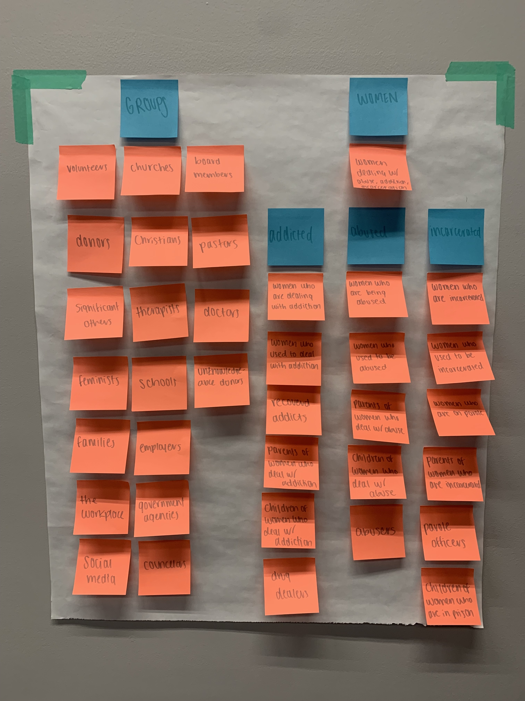

Audience and Goals
To design an effective website, I have to know the audience I am designing for, as well as the overarching and specific goals I want to achieve.
Audience
Through this exercise, all possible audiences that could potentially be involved with You Can Discover Change were listed. These audiences were divided into two sections: A "groups/organizations" section and a "women" section. See below for the full breakdown of categories!
Groups
- Volunteers
- Donors
- Significant Others
- Feminists
- Families
- Workplaces
- Social Media Platforms
- Churches
- Christians
- Therapists
- Schools
- Employers
- Government Agencies
- Counselors
- YCDC Board Members
- Pastors
- Doctors
- Unknowledgable Donors
Women
Addiction
- Women who are dealing with addiction
- Women who used to deal with addiction
- Recoverd addicts
- Parents of women who deal with addiction
- Children of women who deal with addiction
- Drug dealers who supply the addictive substance
Abuse
- Women who are dealing with abuse
- Women who used to deal with abuse
- Recovered addicts
- Parents of women who deal with abuse
- Children of women who deal with abuse
- Abusers
Addiction
- Women who are dealing with addiction
- Women who used to deal with addiction
- Recovered addicts
- Parents of women who deal with addiction
- Children of women who deal with addiction
- Drug dealers who supply the addictive substance
Incarcerated
- Women who are dealing with incarceration
- Women who used to deal with incarceration
- Recovered addicts
- Parents of women who deal with incarceration
- Women on parole
- Parole officers
- Children of women who are in prison
Overarching Goals
Client
| Empower women who are either physically or spiritually incarcerated |
| Teach and mentor in Christian principles so that women can become active members of society. |
| For incarcerated women in York County Detention Center to think of You Can Discover Change when they see it on their jumpsuit. |
| Raise donations to teach more about Christian principles and to break cycles of addiction and incarceration. |
| Gather gift cards from local department stores, grocery stores, and home improvement stores. |
| For women to know that they are rescued, redeemed, restored, and forgiven. |
Audience
| Gather information about YCDC. |
| Give monetary and non-monetary resources. |
| Connect with the women who are either physically or spiritually incarcerated. |
| Participate in either/or the teaching and mentor program through YCDC. |
Website
| Make it easy for an audience to gather information about the program. |
| Make signing up to be a mentor or teacher easily accessible. |
| Make donating to the cause an easy and quick process. |
| Increase website flow through athletics and accessibility. |
| Give off a very feminist vibe. |
Specific Goals
| User | Goals | Content/Action |
|---|---|---|
| Women of all ages who are incarcerated physically in the York County Detention Center and other local facilities. | Share what the program has to offer and how it can help. | Persuade them to join the association and become involved in classes and mentor groups for help and to get involved through brochures, posters, and an ambassador. |
| Women of all ages who are incarcerated spiritually within the York County district and beyond. | Encourage them in their walk with faith and offer any needed support. | Tell them about how living with Christian principles can change the way that they think through mentor groups and teaching classes. |
| Students (both local and not local) ages 18 and older. | Inform them of how they can support YCDC. | Offer volunteer and internship programs to increase outreach possibilities. |
| Churches/Christians in the York County District and beyond. | Offer a connection point for involvement and support. | Have specific volunteer positions and donation possibilities for outside organizations. |
| Families/Significant others of women in the York County Detention Center, or within the YCDC program. | Offer hope to those who have a family member/significant other who might benefit from this organization. | Have a resource page that makes it easy to figure out what options are available for women and their families/significant others for hope. |
| Doctors/Therapists within the York County District | Inform them of how they can support YCDC as well as possibilities of how they might partner with YCDC. | Donations, Programs that connect medical programs with spiritual help offered through the website. |